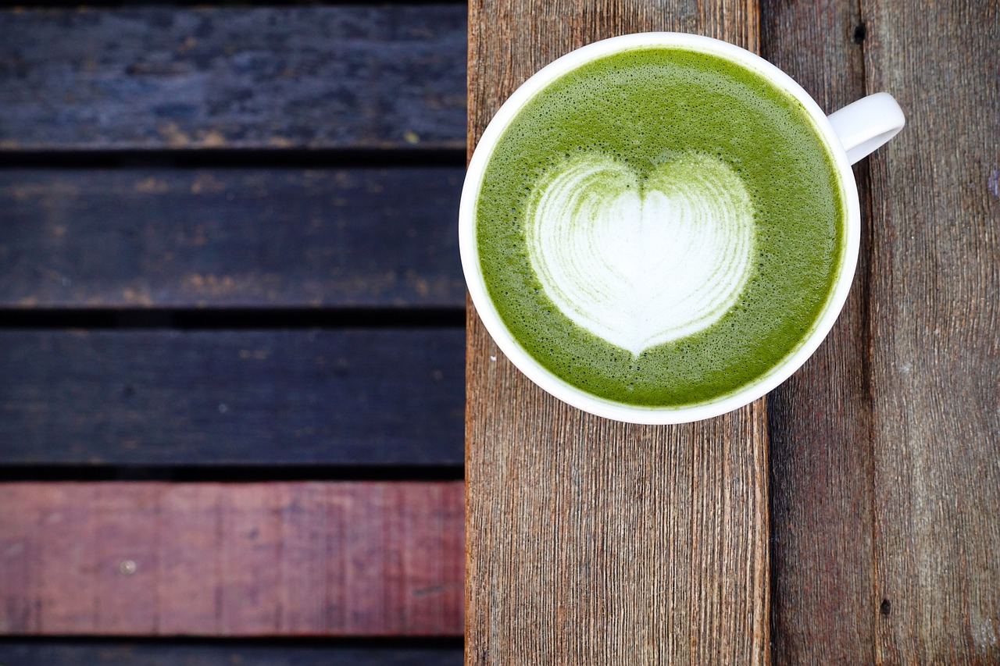
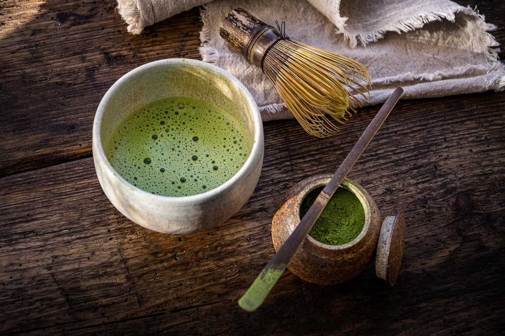

DIY Matcha Latte: So geht’s
Du möchtest wissen, wie man Matcha selber macht? Mit diesem einfachen Rezept gelingt dir dein Matcha Latte ganz leicht zu Hause – cremig, leicht fruchtig und perfekt für Matcha-Neulinge sowie Kenner.
Zutaten für 1 Portion:
- 1 TL hochwertiges Matcha-Pulver (am besten Ceremonial Grade )
- 60 ml heißes Wasser (ca. 80 °C, nicht kochend!)
- 150 ml aufgeschäumte Hafermilch
- 2 TL Mango-Püree (z. B. von Koro)
Zubereitung:
- Siebe das Matcha-Pulver in eine Schale oder Tasse, damit keine Klümpchen entstehen.
- Füge das heiße Wasser hinzu und verrühre beides kräftig mit einem Matcha-Besen (Chasen) in W-Form, bis sich ein feiner Schaum bildet.
- Gib das Mango-Püree in ein Glas, gieße den Matcha langsam darauf.
- Fülle das Glas mit der aufgeschäumten Hafermilch auf. Optional mit Eiswürfeln servieren.
Fertig ist dein fruchtiger DIY Matcha Latte ! Für ein noch intensiveres Aroma empfehlen wir Ceremonial Grade Matcha .
 